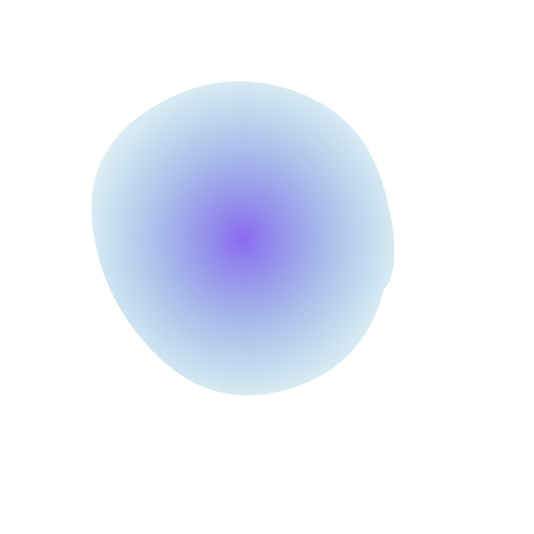
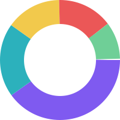

Settle DeFi trades in real time, at a fraction of the cost.
Aurorachain is a zero-knowledge Layer 2 built for high-frequency, low-fee decentralized finance. EVM-compatible, community-governed, and live on mainnet since March 2026.
Built for traders, not just for holders
Every design decision on Aurorachain optimizes for one thing: settling trades faster and cheaper than the base layer, without giving up security.
Sub-second finality
Our zk-rollup batches transactions off-chain and posts succinct proofs to the base layer, so trades finalize in well under a second.
Full EVM compatibility
Deploy existing Solidity contracts with no rewrites. Every major wallet and indexer already works out of the box.
Independently audited
The core protocol and bridge contracts have each completed two independent security audits, with reports published on request.
Native cross-chain bridge
Move assets between Aurorachain and major L1s in minutes, secured by a decentralized validator set rather than a single custodian.
$AURA tokenomics
Fixed supply of 1,000,000,000 $AURA. No mint function. Allocation below.

| Category | Share | Vesting |
|---|---|---|
| Community & ecosystem rewards | 40% | 4-year linear |
| Core team | 20% | 1-year cliff, 3-year linear |
| Treasury | 15% | DAO-governed |
| Early backers | 15% | 6-month cliff, 2-year linear |
| Liquidity provisioning | 10% | Unlocked at TGE |
Roadmap
Shipped and planned milestones for 2026.
-
Q1 2026
Mainnet launch
Core zk-rollup, bridge, and block explorer went live on mainnet after two independent audits.
-
Q2 2026
Governance module
$AURA holders gained on-chain voting over treasury spend and protocol parameters.
-
Q3 2026
Cross-chain bridge v2
Added support for three additional base layers and reduced bridge withdrawal time from 24 hours to 20 minutes.
-
Q4 2026
Mobile wallet
Native iOS and Android wallet with built-in on-ramp, currently in closed beta.
Team
A small team of protocol engineers and market-structure people.
Mira Ashworth
Co-Founder & CEO
Previously led settlement infrastructure at a Tier 1 market maker for six years.
Devon Okafor
Co-Founder & Head of Protocol
Core contributor to two prior zero-knowledge rollup implementations.
Priya Ramanathan
Head of Security
Former smart-contract auditor; leads both internal review and external audit coordination.
Tomas Lindqvist
Head of Growth
Runs community, partnerships, and the validator onboarding program.
Frequently asked questions
What is Aurorachain?
Aurorachain is a zero-knowledge Layer 2 network built on top of an existing base layer, designed specifically for fast, low-fee DeFi trading while inheriting the base layer's security.
Is $AURA required to use the network?
No. Transaction fees can be paid in several supported assets. $AURA is used for governance voting and for staking to secure the validator set.
Has the protocol been audited?
Yes. The core rollup contracts and the bridge have each completed two independent third-party audits. Summaries are available on request from the team.
How long do bridge withdrawals take?
As of the Q3 2026 bridge upgrade, standard withdrawals typically complete in about 20 minutes, down from the original 24-hour challenge window.
Where can I read the technical whitepaper?
The whitepaper is linked from the navigation and footer of this site. If the download link is unavailable, reach out through our community channels linked below.